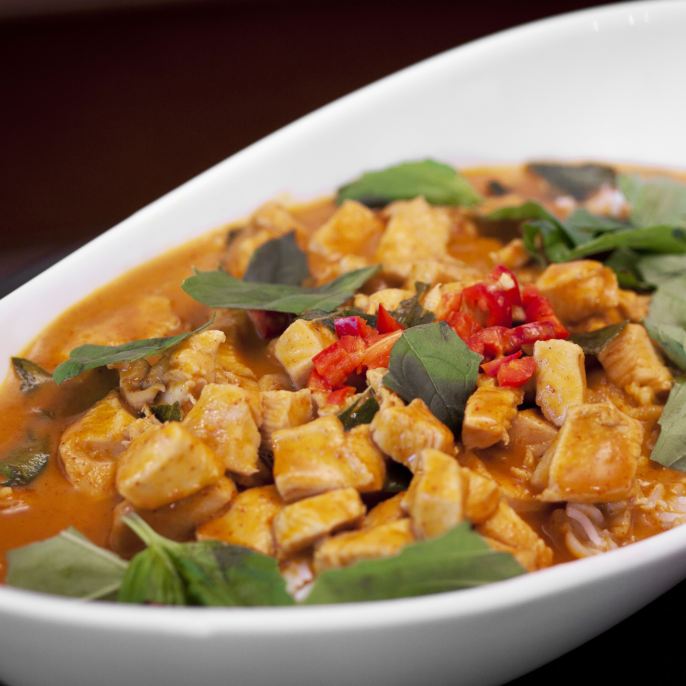

Panang Curry with Chicken

Panang curry with chicken represents the diversity of Thailand's southern region. Panang refers to the island of Penang in Northern Malaysia bordering southern Thailand. Use 4 tablespoons curry paste from a fresh curry paste recipe or 5 tablespoons pre-made curry paste if time does not permit making your own paste
Ingredients List
- Panang Curry Paste
- Cooking Oil
- Coconut Milk
- Chicken Breast
- Palm Sugar
- Fish Sauce
- Makrut Lime Leaves
- Red Chile Pepper
- Thai Basil Leaves
Directions
- Fry the curry paste in the oil in a large skillet or wok over medium heat until fragrant.
- Stir the coconut milk into the curry paste and bring to a boil.
- Add the chicken; cook and stir until the chicken is nearly cooked through, 10 to 15 minutes.
- Stir the palm sugar, fish sauce, and lime leaves into the mixture; simmer together for 5 minutes.
- Taste and adjust the saltiness by adding more fish sauce if necessary.
- Garnish with sliced red chile peppers and Thai basil leaves to serve.
Home